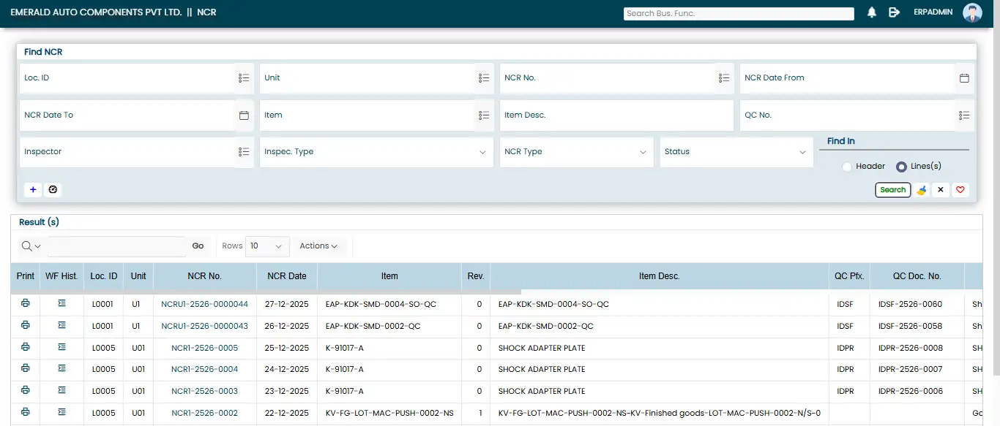
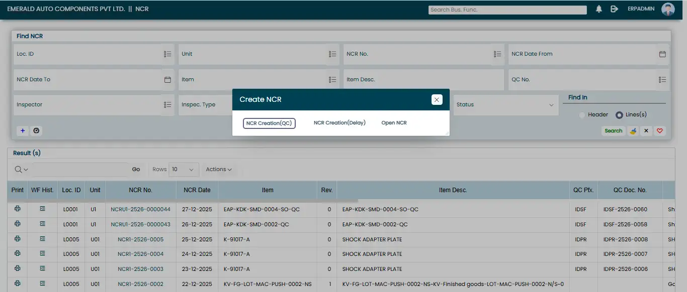
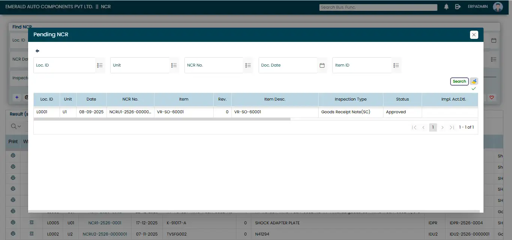
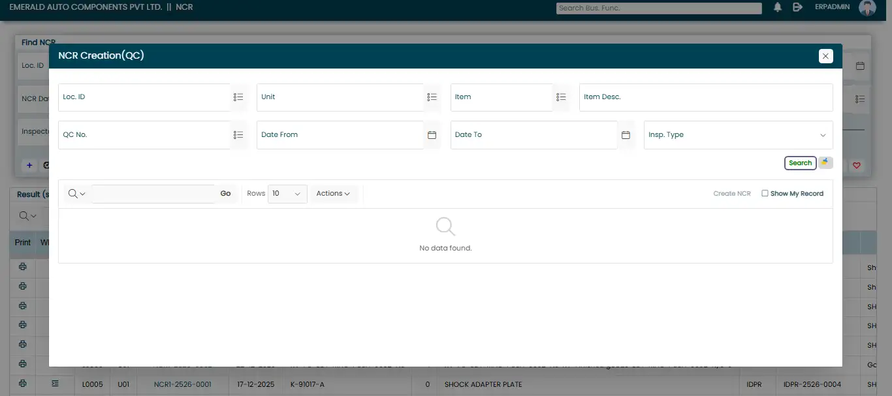
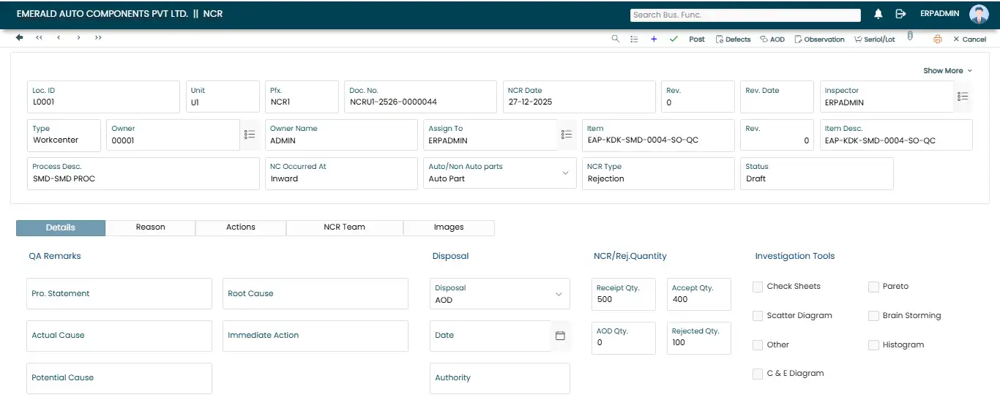
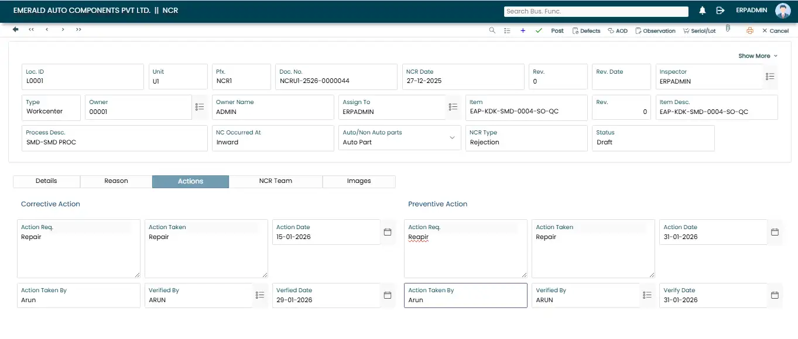
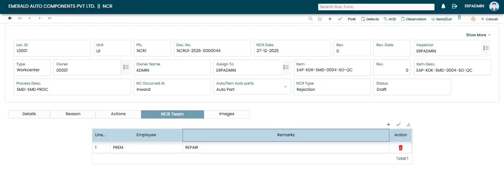
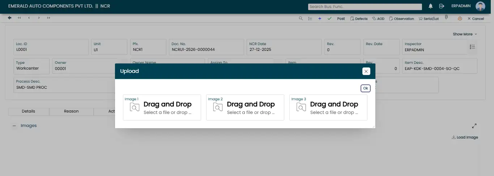
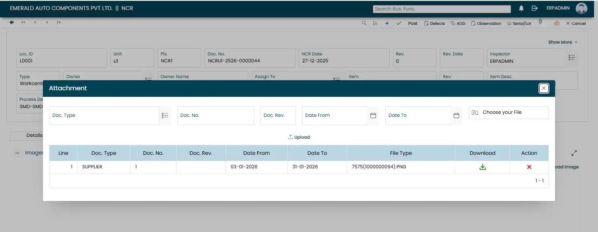
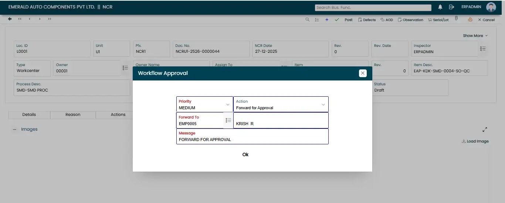

<div data-category="Quality control Management" data-title="NCR" data-updated="December 01, 2025" data-contributors="RoadmapIT" data-breadcrumb="Home,Quality control Management,NCR">
  <div class="page-content">
    <p>During the Inspection transaction, there exists rejection of quantities. The root cause of the defect occurred, Impacts of the defect and the necessary corrective action to be done for the defects are created as document for the supplier/customer involved in the transaction. Such a document is called Non-conformance and corrective action record. The document can be created automatically or manually based on the NCR control.</p>

    <h5>Navigation Path</h5>
    <p class="fs-6">Quality Management \ Transaction \ NCR Creation</p>
    
    <ul style="list-style-type: none; align-content: center">
      <li class="mouse-icon">Search screen displays the list of NCRs with the relevant details and its status.</li>
      <li class="mouse-icon">User can filter the respective documents by entering the search parameters at the header.</li>
      <li class="mouse-icon">On clicking search button, system displays the results relevant to the search parameters entered.</li>
      <li class="mouse-icon">
        Using
        
        icon, entered search parameters can be cleared.
      </li>
      <li class="mouse-icon">
        To close the screen, use
        <i class="bi bi-x fs-4 mx-2 text-danger"></i>
        icon.
      </li>
    </ul>
    
    <ul style="list-style-type: none; align-content: center">
      <li class="mouse-icon">
        Click the
        <i class="bi bi-plus fs-4 mx-2 text-primary"></i>
        Add button.
      </li>
      <li class="mouse-icon">Select the type NCR Creation (QC), NCR Creation (Delay), Open NCR.</li>
    </ul>
    
    <ul style="list-style-type: none; align-content: center">
      <li class="mouse-icon">Based on the type selected, system displays all the NCR document relevant to the type.</li>
      <li class="mouse-icon">Observation details of corresponding NCR can be viewed from the Observation button.</li>
      <li class="mouse-icon">NCR document can be closed using the Close button.</li>
      <li class="mouse-icon">The Action and Cause entered for the NCR control is displayed in the Details dialog.</li>
    </ul>
    
    <ul style="list-style-type: none; align-content: center">
      <li class="mouse-icon">Filter details with the relevant search fields in the header.</li>
      <li class="mouse-icon">Check the Select flag and click on Create NCR button.</li>
      <li class="mouse-icon">The NCR document will be created for the selected Inspection type.</li>
    </ul>
    
    <ul style="list-style-type: none; align-content: center">
      <li class="mouse-icon">The QC No. is displayed to refer the inspection record for which the NCR is created.</li>
      <li class="mouse-icon">The cause for the defects is entered in the Details tab of the NCR document.</li>
      <li class="mouse-icon">The Accepted and Rejected quantity are displayed in the NCR/Rej. Quantity.</li>
      <li class="mouse-icon">The Necessary Disposal action has to be selected from the list item.</li>
    </ul>
    
    <ul style="list-style-type: none; align-content: center">
      <li class="mouse-icon">The necessary Corrective action is entered in the Action tab.</li>
      <li class="mouse-icon">Preventive action which should be practiced to avoid the defects should be given.</li>
    </ul>
    
    <ul style="list-style-type: none; align-content: center">
      <li class="mouse-icon">NCR team involved in the analysis is listed in the NCR Team tab.</li>
      <li class="mouse-icon">The Lot serial details are displayed using the Serial/Lot button.</li>
      <li class="mouse-icon">
        Reports can be viewed using
        <i class="bi bi-download fs-5 mx-1 text-muted"></i>
        Print button.
      </li>
      <li class="mouse-icon">Click on Cancel button to cancel the NCR.</li>
    </ul>
    
    <ul style="list-style-type: none; align-content: center">
      <li class="mouse-icon">Defect Images are captured and loaded under the Images tab.</li>
    </ul>
    
    <ul style="list-style-type: none; align-content: center">
      <li class="mouse-icon">
        Click on
        <i class="bi bi-paperclip fs-4 mx-2"></i>
        button to attach the file.
      </li>
      <li class="mouse-icon">
        Click on
        <i class="bi bi-x fs-4 mx-2 text-danger"></i>
        button to delete the attached file.
      </li>
      <li class="mouse-icon">
        Click on
        <i class="bi bi-upload fs-5 mx-1 text-muted"></i>
        button to reload the attached file.
      </li>
      <li class="mouse-icon">
        Click on
        <i class="bi bi-download fs-5 mx-1 text-muted"></i>
        button to open the attached file.
      </li>
      <li class="mouse-icon">
        Click on
        <i class="bi bi-check-lg fs-4 mx-1 text-success"></i>
        to save.
      </li>
      <li class="mouse-icon">Click post button and the document will be sent for approval.</li>
    </ul>
    
  </div>
</div>